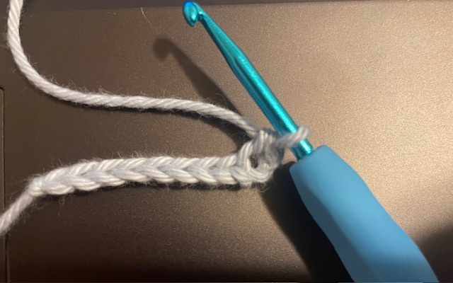
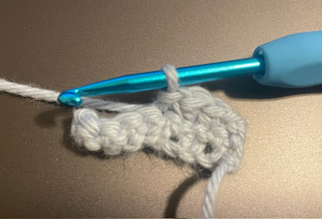
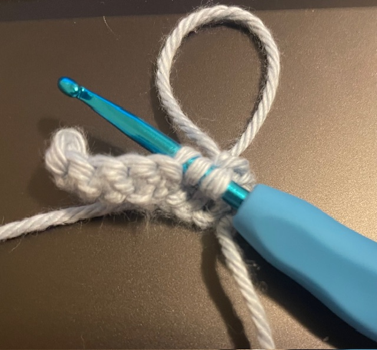

To start a single crochet, you must first make a foundation chain so you have somewhere to work from. Then, you insert the hook under the top loop of the chain that is 2nd from the hook. Then you will yarn over and pull up a loop. Then, you yarn over again and pull through both loops on the hook. This is one single crochet.
Typically, slip stitches are used to fasten off a project or to create a border. To create a slip stitch, insert your hook into the next stitch, then yarn over and pull through the only loop you have on your hook.
To do an invisible decrease, you insert the hook into the front loop only of the next two stitches. So, you should have 3 loops on your hook right now. Yarn over and pull through the first two loops. Yarn over and pull through the 2 loops left on the hook.
